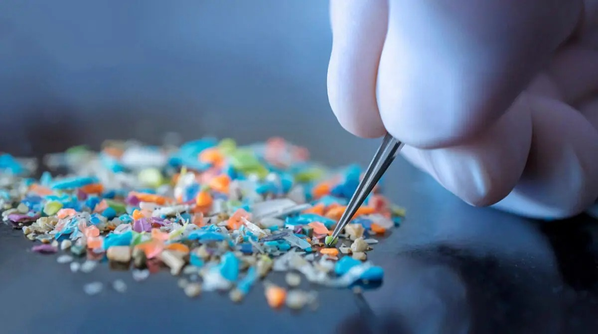
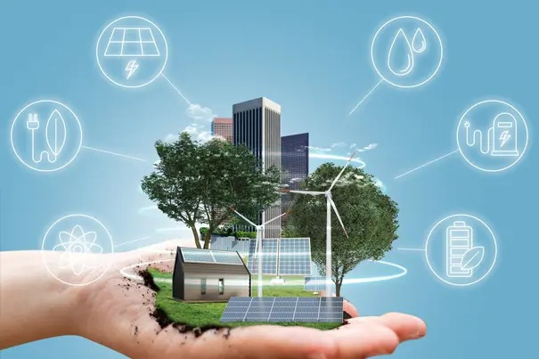

3.1 Product Life Cycle

Carbon Footprint
Total greenhouse gases released due to human activities.

Carbon Handprint
Positive actions to reduce carbon emissions.

Microplastics in the Food Chain
Microplastics enter ecosystems and may affect human health.
3.2 Environmental Pollution
| Type | Cause & Effect |
|---|---|
| Air Pollution | Vehicle emissions causing respiratory diseases. |
| Water Pollution | Sewage and industrial waste polluting rivers. |
| Thermal pollution | Hot water from factories is released into rivers or seas, increasing water temperature and affecting aquatic life. |
| Land pollution | Improper disposal of solid waste, chemicals, and pesticides, reducing soil fertility. |

Water Pollution Index (WPI)
Measures water quality based on pollution level.

Biochemical Oxygen Demand (BOD)
Amount of oxygen required by microorganisms.

Effective Microorganisms (EM)
Green technology for treating polluted water.
3.3 Environmental Conservation and Restoration

Negative Emission Technology
Negative emission technology refers to methods that remove carbon dioxide from the atmosphere. Examples include large-scale tree planting, carbon capture and storage (CCS), and the use of biochar. These technologies help reduce the effects of climate change and support long-term environmental sustainability.
3.4 Video Tutorial
Environmental Sustainability Tutorial
This tutorial video explains key concepts of environmental sustainability and conservation practices in a simple and engaging way.